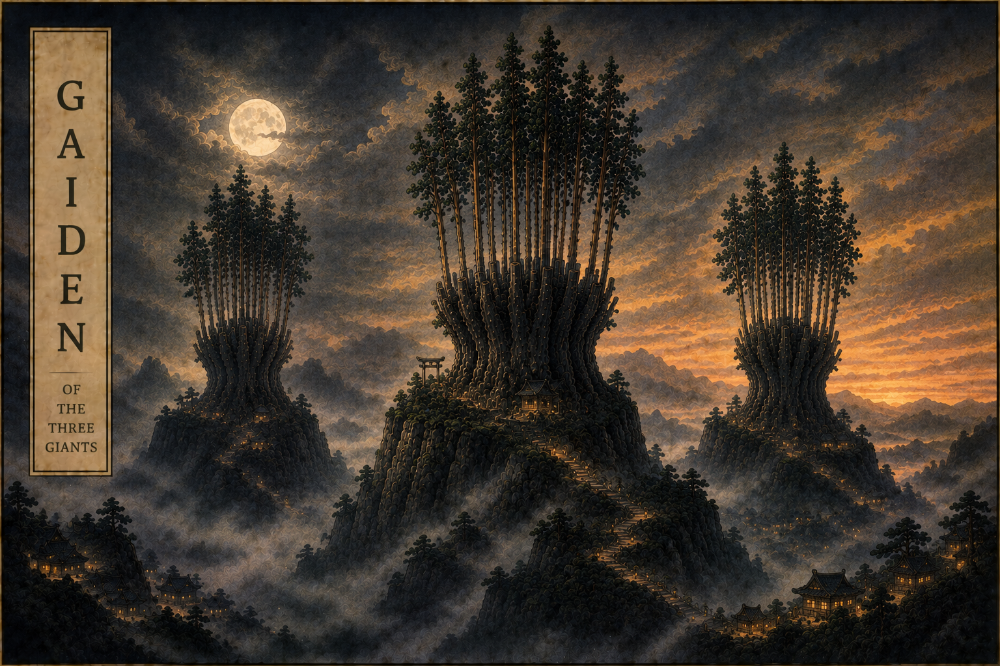

|
Gaiden: A Side Tale of Three Giants |
 |
Modern gradient boosting is dominated by three giants:
- XGBoost
- LightGBM
- CatBoost
Most practitioners know these libraries through their default configurations. Yet hidden within each framework are lesser-known capabilities that fundamentally change how boosting behaves.
This vignette explores three such paths:
- “extreme”: boosting forests rather than individual trees.
- “linear”: piecewise-linear leaves with stochastic tree dropout.
- “langevin”: stochastic gradient Langevin boosting and posterior sampling.
Like any good gaiden, this is a side story.
Our examples use the “forester” dataset, which contains measurements describing forests and timber volume.
Prepare Dataset
library(daisugi)
library(forested)
library(rsample)
set.seed(5311)
# defining splits for training and testing datasets
splits <- rsample::initial_split(forested::forested)
training <- rsample::training(splits)
testing <- rsample::testing(splits)
# (x, y) Training:
x_train <- training |>
# target (and factors as not all engines handle cats)
dplyr::select(-forested, -tree_no_tree, -land_type, -county)
# our target variable:
y_train <- training |> dplyr::select(precip_annual) |> dplyr::pull()
# (x, y) Testing:
x_test <- testing |>
dplyr::select(-forested, -tree_no_tree, -land_type, -county)
y_test <- testing |> dplyr::select(precip_annual) |> dplyr::pull()
head(y_test)
#> [1] 1297 1036 1611 1736 2883 2312extreme
XGBoost is traditionally viewed as a boosted tree algorithm.
However, XGBoost also supports adding multiple trees at each boosting iteration. Instead of boosting trees, one may boost forests. Number of parallel trees is default to 10 in daisugi.
xtreme_trees <- grow_extreme_trees(
x_train,
y_train,
trees = 10L,
num_parallel_tree = 20L,
task = "regression"
)
harvest_extreme_trees(xtreme_trees, x_test) |> head()
#> [1] 1290.766 1031.917 1590.040 1704.051 2786.631 2276.269Each boosting stage contributes an entire forest, blending ideas from random forests and gradient boosting.
linear
LightGBM contains support for linear models inside terminal nodes.
Combined with DART dropout, the resulting machine behaves differently from conventional boosted trees. Rather than assigning a constant prediction to each leaf, local linear models are fit inside the partitions.
linear_dart <- grow_linear_trees(
x_train,
y_train,
trees = 5L,
task = "regression"
)
harvest_linear_trees(linear_dart, x_test) |> head()
#> [1] 1201.622 1093.379 1329.556 1380.677 1851.601 1614.964Piecewise-linear boosting occupies a middle ground between tree ensembles and classical regression models.
langevin
CatBoost supports stochastic gradient Langevin boosting (SGLB).
Rather than following a purely deterministic optimization path, controlled noise is introduced during training. Combined with posterior sampling, the resulting ensemble resembles a Bayesian sampling procedure over forests.
langevin_trees <- grow_langevin_trees(
x_train,
y_train,
trees = 25L,
task = "regression"
)
harvest_langevin_trees(langevin_trees, x_test) |> head()
#> [1] 1203.442 1015.107 1374.117 1486.084 1984.428 1733.365